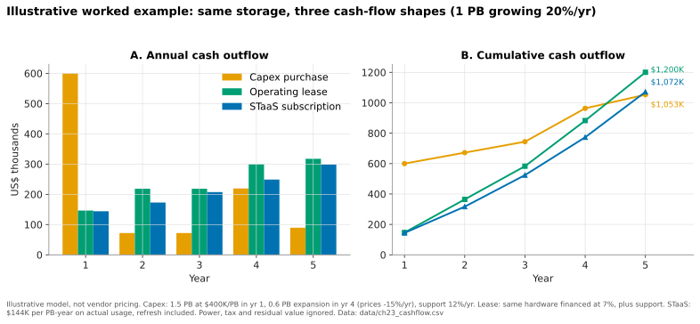

23. Consumption models¶
Depth: L2 · Reading time: ~6 min · Last verified: 2026-11-01 Prerequisites: Performance and economics metrics · Scale-up dual-controller arrays · Control planes and fleet management
TL;DR¶
- Storage is bought four ways: outright capex, a lease, capex plus an upgrade subscription (Evergreen//Forever-style), or storage-as-a-service (STaaS), where the vendor owns the hardware and bills for consumption against SLAs.
- Total cost over five years can be similar; the cash-flow shape, balance-sheet treatment and risk allocation differ. STaaS turns a lumpy purchase into a usage-tracking fee and moves overprovisioning and refresh risk to the vendor.
- For the vendor, STaaS trades upfront product revenue for ratable revenue. A mix shift toward it depresses reported growth while lifting ARR, RPO and TCV, which is why Everpure leads with those metrics.
- The business model is an architecture requirement. A credible subscription needs non-disruptive upgrades, stateless controllers and fleet telemetry; bolting a subscription onto a forklift-upgrade array just finances the forklift.
- Everpure was early (Evergreen, 2015). Dell, NetApp and HPE now match the contract terms; matching the architecture is harder.
Why this matters for Everpure strategy¶
Subscription services were 46% of Everpure's FY2026 revenue, and subscription ARR reached $1,924.3M with 113% net dollar retention1. By Q2 FY2027 ARR was $2.13B (+20%) and RPO $4.1B (+44%)2. Storage-as-a-service TCV, led by Evergreen//One, grew 121% to $277M in that quarter, a run rate above $1B a year3. Management says this acceleration "dilutes reported near-term revenue growth"3. Reading Everpure's financials or pricing a deal against Dell APEX requires knowing what each model does to cash, revenue and architecture.
Core concepts¶
Four ways to pay for the same petabyte¶
| Model | Who owns the asset | How upgrades work | Vendor revenue (ASC 606) | Customer accounting (US GAAP) | Examples |
|---|---|---|---|---|---|
| Capex purchase + maintenance | Customer | Forklift refresh every 4–6 years, with data migration | Product upfront at transfer of control; support ratable | PP&E, depreciated; support is opex | Any array |
| Operating lease | Lessor (bank or captive finance arm) | As capex; asset returned or refinanced at term end | Upfront if sold to a third-party lessor | Right-of-use asset and lease liability on balance sheet (ASC 842); straight-line cost | Any array via leasing partner |
| Capex + upgrade subscription | Customer | Controllers refreshed in place at renewal; media expanded with credits | Product upfront; subscription ratable4 | PP&E plus opex subscription | Evergreen//Forever5; NetApp Storage Lifecycle Program / Advance6; Dell Future-Proof7 |
| Storage-as-a-service | Vendor | Vendor's problem; SLA-backed | Over time, on a consumption basis; contracts usually set a minimum usage commitment plus fees for usage above it8 | Usually a service contract, so opex and off balance sheet, if the vendor's substitution rights are substantive9 | Evergreen//One; Dell APEX; NetApp Keystone; HPE GreenLake |
Table 23.1 — Moving down the table shifts asset ownership, refresh risk and revenue timing from the customer's books to the vendor's.
The lease-versus-service line is an audit judgment. Under ASC 842, a contract contains a lease if there is an identified asset the customer directs. A vendor's right to swap hardware is only "substantive" if it is practical and economic for the vendor9. STaaS contracts sell capacity and performance, not specific boxes. One EBITDA nuance: STaaS fees and US GAAP operating-lease cost both sit above EBITDA, whereas purchased hardware depreciation sits below it.
Cash-flow shapes¶

Figure 23.1 — Illustrative: the three models land within ~15% of each other in nominal five-year cost; what differs is timing, who carries idle capacity, and who pays for the refresh.
Data: data/ch23_cashflow.csv
Assumptions. Demand starts at 1.0 PB effective and grows 20% a year. The capex buyer sizes for year 3 (1.5 PB at an assumed $400K per PB), expands 0.6 PB in year 4 at prices 15% a year lower, and pays 12% a year for support. The lease finances the same hardware at 7%. STaaS charges an assumed $144K per PB-year on actual usage. Discounting at 8% with payments at the start of each year, present costs are capex ~$969K, lease ~$1,007K and STaaS ~$899K. Three things the nominal totals hide: the capex buyer runs one-third idle in year 1 (1.0 of 1.5 PB used); its controllers are five years old at the end and due for a forklift refresh that STaaS already includes; and the STaaS rate is the negotiated variable that decides the winner. Semiconductor bridge: STaaS is a foundry capacity reservation. The customer commits to a minimum take, and the vendor owns the fab, the utilization risk and the node upgrades.
What the vendor's P&L sees¶
Take a three-year, $1.2M deal. Sold as capex, perhaps $0.9M is product revenue in the quarter it ships and $0.3M of support is recognized at $25K a quarter, so year-one revenue is about $1.0M. Sold as STaaS, it is roughly $100K a quarter, $0.4M in year one. Same economics, 60% less year-one revenue, while the vendor pays for hardware up front. Hence Everpure's emphasis on ARR, RPO and TCV, and its CEO's claim that growth adjusted for the Evergreen//One shift exceeded 40%3. Its subscription gross margin (74.9% in Q2 FY2027, non-GAAP) exceeds product (66.2%)10, but STaaS hardware costs sit inside the subscription line.
Why the business model shapes the architecture¶
flowchart TD
S["Subscription promise: no migrations, upgrades included, SLAs"] --> N["Non-disruptive upgrades"]
N --> C["Stateless controllers: state lives in NVRAM and flash"]
N --> F["Data layout readable by every controller generation"]
N --> M["Modular media swapped in place"]
S --> T["Fleet telemetry"]
T --> U["Meter usage, enforce SLAs, forecast capacity"]
C --> V["Vendor bears refresh and idle-capacity cost"]
M --> V
U --> V
V --> D["Incentive to maximize density and minimize watts per TB"]
D -->|"lower cost to serve"| SFigure 23.2 — A subscription is only profitable if upgrades are cheap and risks are measurable, so the contract pushes engineering toward stateless controllers, modular media and telemetry.
A subscription that promises "never migrate again" is a liability unless swapping controllers is routine. That works only if controllers hold no unique state (Chapter 14) and new controllers read old layouts. Think of a CPU socket kept compatible across generations: chassis as motherboard, controller as chip. Pure Storage had delivered more than 10,000 non-disruptive controller upgrades to more than 3,000 customers by 202211. SLAs require measurement, so Evergreen//One's guarantees run on Pure1 telemetry (Chapter 22), including a watts-per-TiB energy guarantee introduced in January 202312. Once the vendor pays for power and hardware, density is margin, which ties DirectFlash to the subscription model (Chapter 26).
How Everpure approaches it vs. competitors¶
Everpure's Evergreen family has three tiers. Evergreen//Forever is owned hardware with a subscription and a controller refresh at each three-year renewal ("Ever Modern"; six years for the //E lines)13. Evergreen//Flex bills capacity per use across a fleet; its product revenue is recognized when the subscription starts, and its subscription fees ratably, as for Forever8. Evergreen//One is full STaaS, formerly Pure-as-a-Service5. Its SLAs cover performance, availability, capacity, energy and cyber recovery14. Gartner named Pure Storage a Leader in its 2025 consumption-services Magic Quadrant15.
Steelman the competitors. HPE launched GreenLake pay-per-use in 201716, earlier than most, and covers compute and networking as well as storage. NetApp Keystone (2019)17 runs across on-premises and hyperscaler ONTAP. Dell APEX (2021)18 can wrap the broadest hardware portfolio. On contracts, NetApp's and Dell's controller-refresh programs now mirror Evergreen//Forever67. Everpure's edge lies in architecture and track record, not contract terms: one OS lineage designed for in-place upgrades, and a decade of refreshes delivered. A vendor that must migrate data to refresh carries that cost inside every STaaS contract.
History and trajectory¶
timeline
title Consumption models at Pure Storage and Everpure
2015 : Evergreen Gold subscription with in-place controller upgrades
2017 : HPE launches GreenLake pay-per-use
2019 : Pure-as-a-Service name in use : NetApp Keystone
2021 : Dell APEX storage services
2022 : Evergreen family formalised as Forever, Flex and One
2023 : Evergreen One energy-efficiency SLA
2026 : Evergreen One TCV above 1B dollar run rateFigure 23.3 — Subscriptions moved from a Pure Storage differentiator (2015) to an industry norm (2021); the competition shifted to SLAs and architecture.
Next: Evergreen//One Overdrive, letting customers burst above their subscribed level, was announced in 202619 [VERIFY: terms and GA]. Contract lengths are reported at three to four years3.
Numbers that matter¶
| Metric | Value | Context | Source / date |
|---|---|---|---|
| Subscription ARR | $2.13B (+20%) | Q2 FY2027 | Everpure, 2026-08-262 |
| RPO | $4.1B (+44%) | Q2 FY2027 | Everpure, 2026-08-262 |
| STaaS TCV (mainly Evergreen//One) | $277M (+121%) | Q2 FY2027; >$1B run rate | Earnings call, 2026-083 |
| STaaS TCV, FY2026 | $520M (+32%) | Q4 FY2026 alone: $179M (+28%) | Earnings call, 2026-0220 |
| Subscription net dollar retention | 113% | FY2026 (FY2025: 117%) | 10-K1 |
| Non-disruptive controller upgrades | >10,000 for >3,000 customers | Cumulative to 2022 | Blocks & Files11 |
| Year-one revenue, STaaS vs capex | ~40% | Same $1.2M deal | Worked example |
Conversation playbook¶
Questions for a PM
- "What is Evergreen//One's gross margin by contract year?" Strong: a curve showing early-year hardware drag and later payback, plus the utilization assumption.
- "How much headroom above commitment do we deploy, and who pays when it sits idle?" Strong: a percentage, the forecasting model, and redeployment practice.
- "Why do customers choose Forever over One?" Strong: accounting, data-sovereignty and procurement reasons by segment.
Questions for an engineer
- "What breaks a non-disruptive upgrade?" Strong: specific generation-boundary constraints and how they are tested.
- "Which SLA is hardest to meet?" Strong: names the metric and the telemetry used to police it.
- "How is consumption metered: provisioned, written or effective capacity?" Strong: the exact counter and how data reduction enters it.
Don't say this:
- "STaaS is always cheaper." It moves risk; the price decides.
- "Subscription means off balance sheet." Only if no embedded lease exists.
- "Lower revenue growth means weaker demand." Check TCV and RPO first.
Going deeper (optional, L3 pointers)¶
- Everpure 10-K revenue-recognition note; ASC 606 and ASC 842 guidance on identified assets and substitution rights.
- Evergreen program description and Evergreen//One product guide (SLA definitions, metering).
Key terms¶
- STaaS — vendor-owned storage billed on consumption against SLAs.
- TCV / RPO / ARR — contract value signed, contracted revenue not yet recognized, annualized subscription run rate.
- Ratable recognition — revenue spread evenly over the service period.
- See the glossary.
Sources¶
-
Everpure, "Form 10-K for fiscal year ended February 1, 2026," 2026-03-24. https://www.sec.gov/Archives/edgar/data/1474432/000147443226000027/pstg-20260201.htm (retrieved 2026-11-01). ↩↩
-
Everpure, "Everpure Announces Second Quarter Fiscal 2027 Financial Results," 2026-08-26. https://investor.everpuredata.com/news-and-events/press-releases/press-release-details/2026/Everpure-Announces-Second-Quarter-Fiscal-2027-Financial-Results/default.aspx (retrieved 2026-11-01). ↩↩↩
-
Quartr, "Everpure (P) Q2 2027 earnings summary," 2026-08. https://quartr.com/events/everpure-inc-p-q2-2027_3girLLYP (retrieved 2026-11-01); corroborated by Statementdog, "Everpure Inc (P) 2027 Q2 earnings call transcript," 2026-08. https://statementdog.com/analysis/P/earnings_calls/318913 (retrieved 2026-11-01); Nasdaq, "Everpure Q2 Earnings Call Highlights," 2026-08. https://www.nasdaq.com/articles/everpure-q2-earnings-call-highlights (retrieved 2026-11-01; seen via search summary). ↩↩↩↩↩
-
Pure Storage, "Form 10-K for fiscal year ended February 6, 2022," 2022-04. https://www.sec.gov/Archives/edgar/data/1474432/000162828022008643/pstg-20220206.htm (retrieved 2026-11-01). ↩
-
Blocks & Files, "Pure Storage Evergreen rework," 2022-06-08. https://blocksandfiles.com/2022/06/08/pure-storage-evergreen-rework/ (retrieved 2026-11-01). ↩↩
-
NetApp, "Storage Lifecycle Program" (additional terms), n.d. https://www.netapp.com/how-to-buy/sales-terms-and-conditions/additional-terms/storage-lifecycle-program/ (retrieved 2026-11-01); StorageNewsletter, "NetApp Advance," 2023. https://www.storagenewsletter.com/?p=258667 (retrieved 2026-11-01). ↩↩
-
Dell Technologies, "Future-Proof Program," n.d. https://www.dell.com/en-uk/dt/products/future-proof-program.htm (retrieved 2026-11-01). ↩↩
-
Pure Storage, "Form 10-K for fiscal year ended February 2, 2025," 2025-04. https://www.sec.gov/Archives/edgar/data/1474432/000162828025015044/pstg-20250202.htm (retrieved 2026-11-01). ↩↩
-
PwC Viewpoint, "Leases guide, 2.3 Definition of a lease," n.d. https://viewpoint.pwc.com/dt/us/en/pwc/accounting_guides/leases/leases__4_US/chapter_2_scope__1_US/23_definition_of_a_l_US.html (retrieved 2026-11-01). ↩↩
-
Investing.com, "Everpure Q2 FY27 slides: 38% revenue growth, guidance raised sharply," 2026-08. https://www.investing.com/news/company-news/everpure-q2-fy27-slides-38-revenue-growth-guidance-raised-sharply-93CH-4878054 (retrieved 2026-11-01). ↩
-
Blocks & Files, "Pure Storage reworks Evergreen subscription service," 2022-06-08. https://www.blocksandfiles.com/block/2022/06/08/pure-storage-reworks-evergreen-subscription-service/1591308 (retrieved 2026-11-01). ↩↩
-
Pure Storage, "With industry-first energy efficiency guarantee, Pure Storage further expands SLA offerings for Evergreen//One," 2023-01-18. https://www.purestorage.com/company/newsroom/press-releases/pure-expands-sla-offerings-evergreen-one.html (retrieved 2026-11-01). ↩
-
Everpure, "Evergreen Program Description," n.d. https://www.everpuredata.com/legal/evergreen-program-description.html (retrieved 2026-11-01). ↩
-
Everpure, "Evergreen//One Storage as a Service" (solution brief), n.d. https://www.everpuredata.com/content/dam/pdf/en/solution-briefs/sb-evergreen-one-storage-as-a-service.pdf (retrieved 2026-11-01). ↩
-
Nasdaq / PR Newswire, "Pure Storage Named a Leader in the 2025 Gartner Magic Quadrant for Infrastructure Platform Consumption Services," 2025. https://www.nasdaq.com/press-release/pure-storage-named-leader-2025-gartnerr-magic-quadranttm-infrastructure-platform (retrieved 2026-11-01). ↩
-
StorageNewsletter, "HPE GreenLake, suite of pay-per-use solutions," 2017-12-06. https://www.storagenewsletter.com/2017/12/06/hpe-greenlake-suite-of-pay-per-use-solutions/ (retrieved 2026-11-01). ↩
-
Blocks & Files, "NetApp adds Keystone subscription billing," 2019-10-29. https://blocksandfiles.com/2019/10/29/netapp-adds-keystone-subscription-billing/ (retrieved 2026-11-01). ↩
-
TechTarget, "Dell Apex launches data storage, cloud as-a-service options," 2021-05. https://www.techtarget.com/searchstorage/news/252500268/Dell-Apex-launches-data-storage-cloud-as-a-service-options (retrieved 2026-11-01). ↩
-
Coolspirit, "Pure Accelerate 2026: What the latest announcements mean for enterprise storage," 2026-06. https://www.coolspirit.co.uk/blogs/pure-accelerate-2026-what-the-latest-announcements-mean-for-enterprise-storage (retrieved 2026-11-01). ↩
-
ROIC.ai, "Everpure Q4 FY2026 earnings call transcript," 2026-02-25. https://www.roic.ai/quote/P/transcripts/2026-year/4-quarter (retrieved 2026-11-01); corroborated by Quartr, "Everpure (PSTG) Q4 2026 earnings summary," 2026-02. https://quartr.com/events/everpure-pstg-q4-2026_3gir9PxI (retrieved 2026-11-01; seen via search summary). ↩